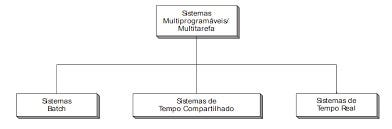

◉ Introdução a Sistemas Operacionais
O sistema computacional nada mais é que um conjunto de dispositivos eletronicos (hardware) que processa
informações atravez de um programa (software), o programa mais importante para comunicação é o sistema
operacional, pois ele fornece as bases para execução das aplicações as quais o usuario deseja executar.
Um sistema operacional é uma interface que se posiciona entre o usúario do sistema e os componentes fisícos
(hardware) do computador e por meio dessa comunicação é possivel controlar a execução de tarefas e programas,
assim como o gerencimaneto de memória, dispositovos e arquivos.
Um computador moderno consiste em um ou mais processadores, alguma memória principal, discos,impressoras, um
teclado, um mouse, um monitor, interfaces de rede e vários outros dispositivos de entrada e saída. Como um todo,
trata-se de um sistema complexo. Se todo programador de aplicativos tivesse de compreender como todas essas
partes funcionam em detalhe, nenhum código jamais seria escrito.
Além disso, gerenciar todos esses componentes e usá-los de maneira otimizada é um trabalho extremamente
desafiador. Por essa razão, os computadores são equipados com um dispositivo de software chamado de sistema
operacional, cuja função é fornecer aos programas
do usuário um modelo do computador melhor, mais simples e mais limpo, assim como lidar com o gerenciamento
de todos os recursos mencionados. A maioria já deve ter tido alguma experiência com um sistema operacional
como Windows,Linux, FreeBSD, ou OS X, mas as aparências podem ser enganadoras. O programa com o qual os
usuários interagem, normalmente chamado de shell (ou interpretador de comandos) quando ele é baseado em
texto e de GUI (Graphical User Interface) quando ele usa ícones, na realidade não é parte do sistema
operacional, embora use esse sistema para realizar o seu trabalho.
Uma visão geral simplificada dos principais componentes em discussão aqui é dada na Figura, em que vemos
o hardware na parte inferior. Ele consiste em chips, placas, discos, um teclado, um monitor e objetos físicos
similares. Em cima do hardware está o software.
A maioria dos computadores tem dois modos de operação: modo núcleo e modo usuário. O sistema operacional, a
peça mais fundamental de software, opera em modo núcleo (também chamado modo supervisor). Nesse modo ele tem
acesso completo a todo o hardwaree pode executar qualquer instrução que a máquina for capaz de executar. O
resto do software opera em modo usuário, no qual apenas um subconjunto das instruções da máquina está
disponível. Em particular, aquelas instruções que afetam o controle da máquina ou realizam E/S (Entrada/Saída)
são proibidas para programas de modo usuário. Ela exerce um papel crucial no modo como os sistemas operacionais
funcionam.
Um sistema operacional está intimamente ligado ao hardware do computador no qual ele é executado. Ele estende o
conjunto de instruções do computador e gerencia seus recursos. Para funcionar, ele deve conhecer profundamente
o hardware, pelo menos como aparece para o programador. Por esta razão, vamos revisar brevemente o hardware de
computadores como encontrado nos computadores pessoais modernos. Depois, podemos começar a entrar nos detalhes
do que os sistemas operacionais fazem e como eles funcionam. Conceitualmente, um computador pessoal simples
pode ser abstraído em um modelo que lembra a Figura.
• A CPU, memória e dispositivos de E/S estão todos conectados por um sistema de barramento e comunicam-se uns com
os outros sobre ele. Computadorespessoais modernos têm uma estrutura mais complicada,envolvendo múltiplos
barramentos.
• Unidade de controle: Denominada também unidade de controle de instruções. É o componente responsável pela busca,
interpretação e controle das instruções na memória.
• Unidade Aritmética e Lógica: É composta de circuitos aritméticos e lógicos: soma, subtração, multiplicação,
divisão, comparações relacionais. Realiza as operações solicitadas por cada instrução de máquina. Em geral possui,
para cada instrução de máquina, um circuito correspondente.
• Registradores: São dispositivos utilizados para o armazenamento de informaçõe temporárias necessárias ao
processamento e execução de instruções. São comumente utilizados como acumuladores para informações de controle
do sistema operacional ou para informações intermediárias.
• Clock: É o dispositivo responsável pela geração de pulsos eletrônicos que sincronizam as operações dos demais
componentes da máquina. Esses sinais caracterizam o que conhecemos por sinal digital.
• Barramento: Podemos definir os barramentos como uma via de comunicação pela qual o processador se comunica com
o seu exterior (memórias, periféricos, etc.). É, portanto, um meio de transmissão de informações ou sinais,
distinguidos por suas funções. No caso dos sistemas baseados em microprocessador ao menos três barramentos
são fornecidos: barramento de dados, barramento de endereços e barramento de controle. Estes barramentos
fazem parte do que se chama de barramento local. São considerados também como barramentos os conectores
dos dispositivos de entrada e saída de dados, denominados de barramentos de expansão. Estes incluem os
conectores do tipo PCI, AGP, USB entre outros.
• Endereçamentos: Para o CPU só existem dois tipos de dispositivos, a memória e os periféricos de entrada e
saída. Para poder comunicar com eles e reconhecê-los, o processador utiliza endereços. Para cada periférico
e para cada localização de memórias existe um determinado endereço. Aqui é que entra em funcionamento o
barramento de endereços. A CPU envia por este barramento um endereço para determinado dispositivo, para assim
poder comunicar com ele.
Tipos de sistemas operacionais:
Sistemas Monoprogramáveis/Monotarefa:
Os primeiros sistemas operacionais eram voltados tipicamente para a execução decum único programa. Qualquer
outra aplicação, para ser executada, deveria aguardar o término do programa corrente. Neste tipo de sistema,
o processador, a memória e os periféricos permanecem exclusivamente dedicados à execução de um único programa.
Os sistemas monoprogramáveis estão diretamente ligados ao surgimento, na década de 50/60, dos primeiros
computadores. Embora os sistemas operacionais já tivessem evoluído com as tecnologias de multitarefa e
multiprogramáveis, os sistemas monoprogramáveis voltaram a ser utilizados na plataforma de microcomputadores
pessoais e estações de trabalho devido à baixa capacidade de armazenamento destas máquinas, na época. Era muito
clara a
desvantagem deste tipo de sistema, no que diz respeito à limitação de tarefas (uma de cada vez), o que
provocava um grande desperdício de recursos de hardware. Se comparados a outros sistemas os monoprogramáveis
são de simples implementação, não existindo muita preocupação com problemas decorrentes do compartilhamento
de recursos como memória, processador e dispositivos de E/S.
Características
- Recursos dedicados a um único programa/usuário;
- Ociosidade do processador;
- Memória subutilizada;
- Implementação fácil.
Sistemas Multiprogramáveis/Multitarefa:
Constituindo-se uma evolução dos sistemas monoprogramáveis, neste tipo de sistema os recursos computacionais
são compartilhados entre os diversos usuários e aplicações: enquanto um programa espera por um evento, outros
programas podem estar processando neste mesmo intervalo de tempo. Neste caso, podemos observar o
compartilhamento da memória e do processador.
O sistema operacional se incumbe de gerenciar o acesso concorrente aos seus diversos recursos, como processador,
memória e periféricos, de forma ordenada e protegida, entre os diversos programas.
As vantagens do uso deste tipo de sistema são a redução do tempo de resposta das aplicações, além dos custos
reduzidos devido ao compartilhamento dos recursos do sistema entre as diferentes aplicações. Apesar de mais
eficientes que os monoprogramáveis, os sistemas multiprogramáveis são de implementação muito mais complexa.
Características:
- Compartilhamento de Recursos;
- Maior produtividade e Redução de custos;
- Acesso concorrente.
Sistemas com Múltiplos Processadores:
Os sistemas com múltiplos processadores caracterizam-se por possuir duas ou mais CPUs interligadas e trabalhando
em conjunto. A vantagem deste tipo de sistema é permitir que vários programas sejam executados ao mesmo tempo
ou que um mesmo programa seja subdividido em várias partes para serem executadas simultaneamente em mais de um
processador.
Esta técnica permitiu a criação de sistemas computacionais voltados para processamento científico, prospecção de
petróleo, simulações, processamento de imagens e CAD. Um fator chave no desenvolvimento dos sistemas
multiprocessados é a forma de comunicação entre as CPUs e o grau de compartilhamento da memória e dos
dispositivos
de E/S.
Em função destes fatores, podemos classificar os sistemas multiprocessados como na Figura a baixo:

Na figura podemos perceber a divisão dos sistemas multiprocessados em duas categorias iniciais: sistemas
fortemente acoplados e fracamente acoplados. A grande diferença entre estas duas categorias é que nos
sistemas fortemente acoplados existe apenas uma memória a ser compartilhada pelos processadores do conjunto,
enquanto que nos fracamente acoplados cada sistema tem sua própria memória individual. A taxa
de transferência entre processadores e memória em sistemas fortemente acoplados é muito maior que nos
fracamente acoplados. Nos sistemas fortemente acoplados a memória principal e os dispositivos de E/S são
gerenciados por um único sistema operacional. Quando todos os processadores na arquitetura são iguais,
diz-se que o sistema é simétrico. No entanto, quando os processadores são diferentes, dá-se à arquitetura
a denominação assimétrica.
Nos sistemas fracamente acoplados, como os processadores estão em arquiteturas diferentes, somente interligados
por cabos de interconexão, cada CPU constitui uma máquina independente, com memória própria, dispositivos de
E/S e sistemas operacionais independentes. Nesta subdivisão, temos como exemplo as redes e os sistemas
distribuídos.
No ambiente de rede, existem dois ou mais sistemas independentes (hosts),
interligados por linhas telefônicas, que oferecem algum tipo de serviço aos demais, permitindo que um host
compartilhe seus recursos, como impressora e diretórios, com os outros hosts da rede.
Enquanto nos sistemas em rede os usuários têm conhecimento dos hosts e seus serviços, nos sistemas distribuídos
os sistema operacional esconde os detalhes dos hosts individuais e passa a tratá-los como um conjunto único,
como se fosse um sistema só, fortemente acoplado. Os sistemas distribuídos permitem, por exemplo, que uma
aplicação
seja dividida em partes e que cada parte seja executada por hosts diferentes na rede. Para os usuários e suas
aplicações é como se não existisse a rede, mas um único sistema centralizado. Outros exemplos de sistemas
distribuídos são os clusters. Em um cluster podem existir dois ou mais servidores ligados por algum tipo de
conexão de alto desempenho, e o usuário não conhece os nomes dos membros do cluster e nem quantos são. Quando
é necessário algum serviço, basta solicitar ao cluster para obtê-lo, sem se preocupar com quem vai dispor e
oferecer tal serviço. Clusters são muito utilizados em servidores de bancos de dados e Web.
Classificação:
Os sistemas multiprogramáveis/multitarefa podem ser classificados de acordo com a forma com que suas aplicações
são gerenciadas e também de acordo com o número de usuários atendidos pelo sistema. Podem então ser divididos
de acordo com o que segue abaixo.
Sistemas BATCH:
Foram os primeiros sistemas multiprogramáveis a serem implementados na década de 60. Nesta modalidade, os
programas eram submetidos para execução através de cartões perfurados e armazenados em disco ou fita, para
posterior execução. Vem daí o nome batch
(lote de cartões). O processamento em batch tem como característica não exigir interação do usuário com o sistema
ou com a aplicação. Todas as entradas ou saídas são implementadas por meio de algum tipo de memória secundária,
geralmente disco ou fita.
Aplicações deste tipo eram utilizadas em cálculo numérico, compilações, back-ups, etc. Estes sistemas, se bem
projetados, podem ser bastante eficientes devido à melhor utilização do processador, mas podem oferecer tempos
de resposta bastante longos.
Atualmente, os sistemas operacionais simulam este tipo de processamento, não havendo sistemas dedicados a este
tipo de execução.
Sistemas de Tempo Compartilhado:
Também chamados sistemas de time-sharing, permitem que diversos programas sejam executados a partir da divisão
de tempo do processador em pequenos intervalos, denominados fatia de tempo (ou time-slice). Caso a fatia de tempo
não seja suficiente para a
conclusão do programa, este é interrompido pelo sistema operacional e substituído no processador por outro,
enquanto aguarda nova fatia de tempo. Neste tipo de processamento, cada usuário tem a impressão de que a
máquina está dedicada ao seu programa, como se ele fosse o único usuário a se utilizar do sistema. Geralmente
permitem interação do usuário com a aplicação através de terminais compostos por monitor, teclado e mouse. Estes
sistemas possuem uma linguagem de controle que permite ao usuário interagir com o sistema operacional através
de comandos. Assim, é possível verificar arquivos armazenados em disco ou cancelar execução de
programas. Normalmente, o sistema responde em apenas alguns segundos à maioria destes
comandos, o que se levou a chamá-los também de sistemas on-line.
A maioria das aplicações comerciais atualmente é processada em ambiente de tempo compartilhado, que oferece
tempos baixos de respostas a seus usuários e menores custos, em função do alto grau de compartilhamento dos
diversos recursos do sistema.
Sistemas de Tempo Real:
Este tipo de sistema é implementado de forma bastante semelhante ao de tempo compartilhado. O que caracteriza
a diferença entre eles é o tempo exigido no processamento das aplicações. Enquanto nos sistemas de tempo
compartilhado o tempo de processamento pode variar sem comprometer as aplicações em execução, nos sistemas de
tempo real os tempos de execução devem estar dentro de limites rígidos, que devem ser obedecidos, caso contrário
poderão ocorrer problemas irreparáveis.
No sistema de tempo real não existe a idéia de fatia de tempo como nos sistemas detempo compartilhado. Um
programa ocupa o processador o tempo que for necessário ou até que apareça um outro com um nível de prioridade
maior. Esta prioridade de execução é definida pela própria aplicação e não pelo sistema operacional, como nos
sistemas de tempo compartilhado.
Estes sistemas são utilizados em aplicações de controle de processos, como monitoramento de refinarias de
petróleo, controle de tráfego aéreo, de usinas, ou em qualquer aplicação onde o tempo de processamento é fator
fundamental.

Sistemas Multiprogramados Monousuário: Os sistemas multiprogramados monousuário caracterizam-se por executarem
mais de uma tarefa concorrentemente, mas dedicado a apenas um único usuário. Como exemplodesses sistemas podemos
citar as versões do windows 3.1, 95, 98 e Me.
Sistemas multiprogramados multiusuário: Já os sistemas multiprogramados multiusuário são S.O.s mais robustos e
indicados para aplicações em ambientes corporativos que podem executar mais de uma tarefa de diversos usuários
conectados por algum tipo de rede de computadores. Exemplos dessessistemas: Unix, Linux e Windows NT, 2000 e 2003.